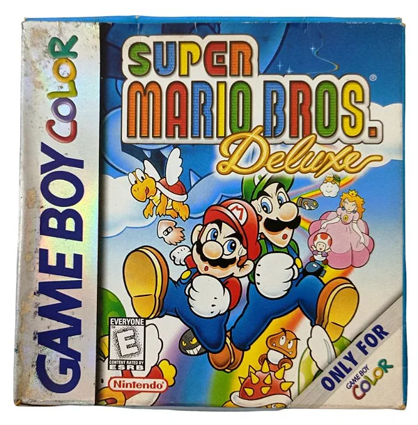
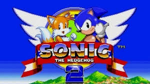
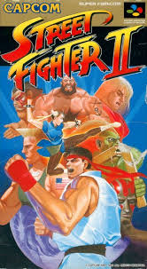

Super Mario World
Super Mario World marcou a infância de muitos com sua jogabilidade impecável e fases inesquecíveis.😃🍄

Sonic the Hedgehog
Sonic the Hedgehog conquistou milhões de jogadores com sua jogabilidade rápida e trilha sonora marcante.😃🎶

Street Fighter II
Street Fighter II não apenas definiu um gênero, mas também conquistou o coração dos fãs de jogos de luta.😃🎮